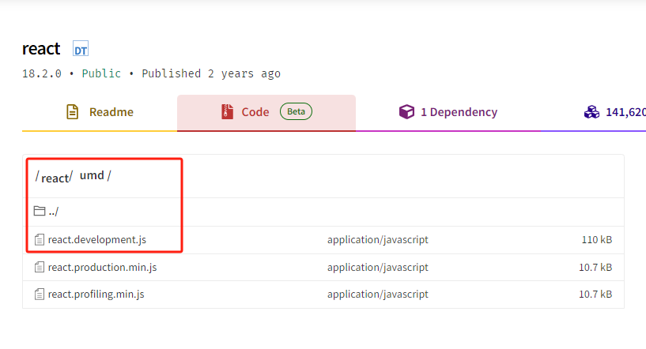

<div id="output"></div>
<!-- Load Babel -->
<!-- v6 <script src="https://unpkg.com/babel-standalone@6/babel.min.js"></script> -->
<script src="https://unpkg.com/@babel/standalone/babel.min.js"></script>
<!-- Your custom script here -->
<script type="text/babel">
const getMessage = () => "Hello World";
document.getElementById('output').innerHTML = getMessage();
</script>
unpkg is a fast, global content delivery network for everything on npm. Use it to quickly and easily load any file from any package using a URL like:
unpkg.com/:package@:version/:file
